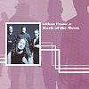

Celtic Lyrics Corner > Artists & Groups > Back Of The Moon > Back Of The Moon > Will Ye Gang Love
|  | Will Ye Gang Love |
| Credits : | Traditional |
| Appears On : | Back Of The Moon |
| Language : | Scots-English |
Lyrics :
My love, he stands in yon chaumer door
Combin' doon his yella hair
His curly locks I like tae see
I wonder if my love minds on me
Chorus (after each verse)
:
Will ye gang, love, and leave me noo?
Will ye gang, love, and leave me noo?
Wid ye forsake yer ain love true
And gang wi' a lass that ye never knew?
I wish, I wish, I wish in vain
I wish I were a maid again
But a maid again I'll never be
'Til an apple grows on an orange tree
I wish, I wish my babe was born
I wish it lay in daddie's arms
And I masel were deid and gone
And the wavin' grass all ower me growin'
As lang's my apron did bide doon
He followed me frae toon tae toon
But noo it's up and abune my knee
My love gaes by but he kens na me
Mak my grave baith lang and deep
And put a rose at my head and feet
And in the middle a turtle dove
Let the people know I died for love